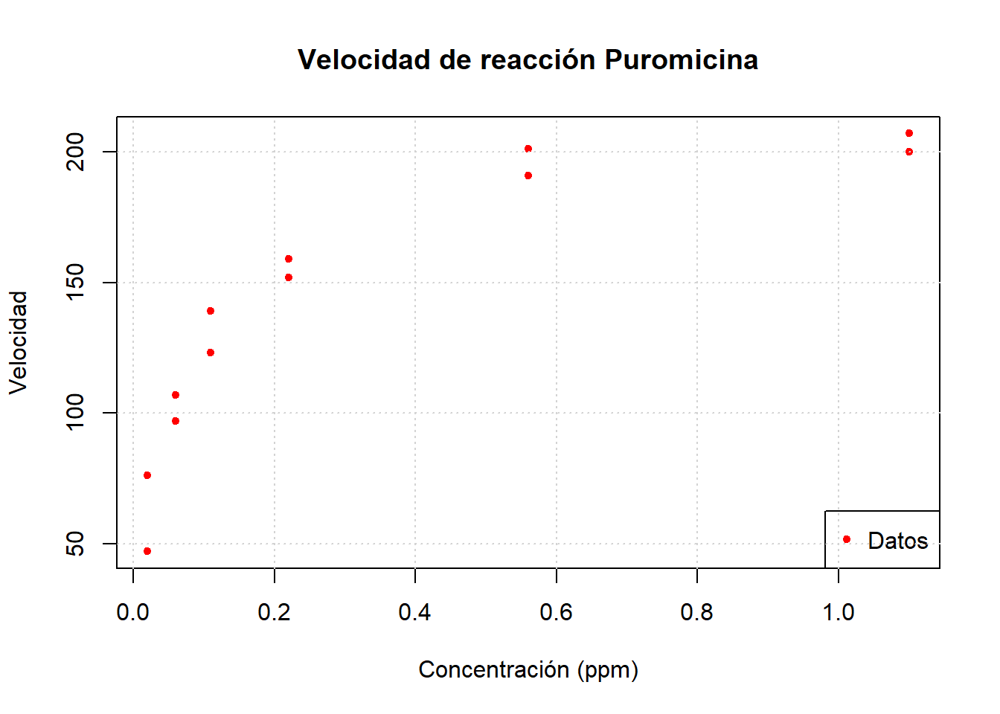
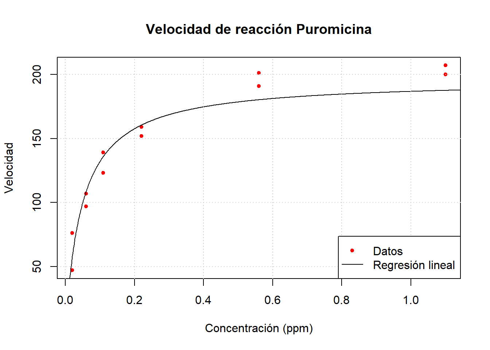
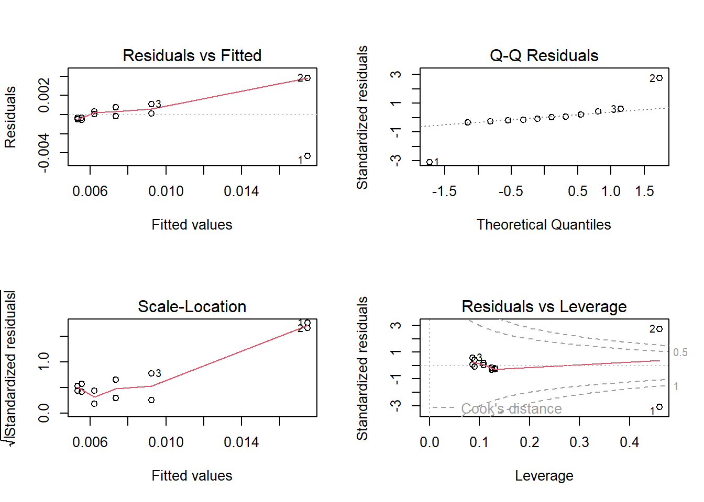
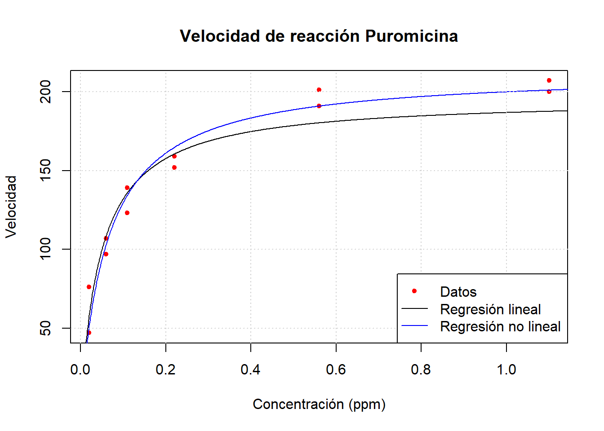
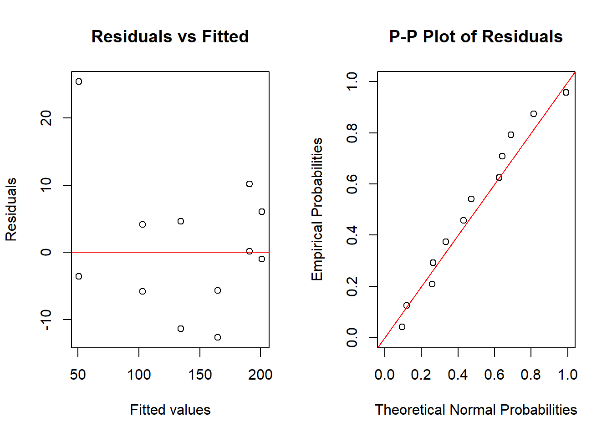
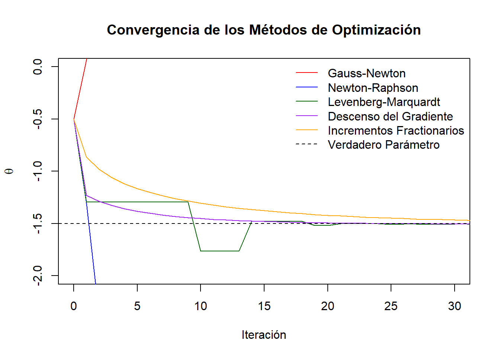

Código
library(dplyr)
library(nortest)
library(MASS)
library(fitdistrplus)Se han proporcionado varios ejemplos en los que una relación de tendencia no lineal entre \(y\) y \(x\) puede transformarse para obtener una relación lineal. Debido a la relativa simplicidad de los métodos de regresión lineal, trabajar con el modelo linealizado es muy atractivo.
A veces es útil considerar una transformación que induzca linealidad en la función de expectativa del modelo. Por ejemplo, consideremos el modelo \[ y = f(x, \boldsymbol\theta) + \varepsilon = \theta_1 e^{\theta_2 x} + \varepsilon \qquad(2.1)\] La Ecuación 1.3 de crecimiento poblacional en el Ejemplo 1.1 es un ejemplo de este modelo. Dado que \(\mathbb{E}(y) = f(x, \theta) = \theta_1 e^{\theta_2 x}\), podemos linealizar la función de expectativa tomando logaritmos, \[ \ln \mathbb{E}(y) = \ln \theta_1 + \theta_2 x. \] Por lo tanto, es tentador considerar reescribir el modelo como \[ \ln y = \ln \theta_1 + \theta_2 x + \varepsilon = \beta_0 + \beta_1 x + \varepsilon \qquad(2.2)\] y usar regresión lineal simple para estimar \(\beta_0\) y \(\beta_1\). Sin embargo, las estimaciones por mínimos cuadrados lineales de los parámetros en la Ecuación 2.2 generalmente no serán equivalentes a las estimaciones no lineales de los parámetros en el modelo original Ecuación 2.1. La razón es que en el modelo no lineal original, los mínimos cuadrados implican la minimización de la suma de residuos al cuadrado en \(y\), mientras que en el modelo transformado de la Ecuación 2.2 estamos minimizando la suma de residuos al cuadrado en \(\ln y\).
Además, notemos que en la Ecuación 2.1 la estructura del error es aditiva, por lo que tomar logaritmos no puede producir el modelo en la Ecuación 2.2. Si la estructura del error es multiplicativa, por ejemplo \[ y = \theta_1 e^{\theta_2 x} \varepsilon \] entonces tomar logaritmos será apropiado, ya que \[ \ln y = \ln \theta_1 + \theta_2 x + \ln \varepsilon = \beta_0 + \beta_1 x + \varepsilon^* \] y si \(\varepsilon^*\) sigue una distribución normal, todas las propiedades estándar del modelo de regresión lineal y la inferencia asociada serán aplicables.
El problema a menudo gira en torno a la estructura del error, es decir, ¿se aplican los supuestos estándar sobre los errores al modelo no lineal original o al linealizado? Esta no siempre es una pregunta fácil de responder.
Ejemplo 2.1 (Modelo de Michaelis–Menten) El modelo de Michaelis–Menten es un modelo de cinética química que relaciona la velocidad inicial de una reacción enzimática con la concentración de sustrato \(x\). Dicho modelo es \[ y = \frac{\theta_1 x}{x+\theta_2}+\varepsilon. \qquad(2.3)\]
Se tienen datos de la velocidad inicial de una reacción para una enzima tratada con puromicina, y se desean estimar los coeficientes \(\theta_1\) y \(\theta_2\).
library(dplyr)
library(nortest)
library(MASS)
library(fitdistrplus)Los datos son los siguientes:
data(Puromycin)
head(Puromycin) conc rate state
1 0.02 76 treated
2 0.02 47 treated
3 0.06 97 treated
4 0.06 107 treated
5 0.11 123 treated
6 0.11 139 treatedA continuación haremos una gráfica para analizarlos visualmente.
data <- Puromycin %>% filter(state == "treated")
plot(data$conc, data$rate, xlab = "Concentración (ppm)", ylab = "Velocidad", main = "Velocidad de reacción Puromicina", pch = 20, col = "red")
legend("bottomright", legend = c("Datos"), col = c("red"), pch = c(20))
grid()
Podemos notar que la función de respuesta esperada puede ser linealizada fácilmente como sigue: \[ \frac{1}{f(x, \boldsymbol{\theta)}} = \frac{x+\theta_2}{\theta_1 x} = \frac{1}{\theta_1} + \frac{\theta_2}{\theta_1}x. \]
Por lo tanto, un primer acercamiento es ajustar el modelo lineal \[ y^\star = \beta_0 + \beta_1 u + \varepsilon, \] en donde \(y^\star = 1/y\) y \(u = 1/x\). El modelo lineal ajustado resulta ser:
linearmodel <- lm(I(1 / rate) ~ I(1 / conc), data = data)
summary(linearmodel)
Call:
lm(formula = I(1/rate) ~ I(1/conc), data = data)
Residuals:
Min 1Q Median 3Q Max
-0.0043103 -0.0003742 -0.0000510 0.0004549 0.0038084
Coefficients:
Estimate Std. Error t value Pr(>|t|)
(Intercept) 0.0051072 0.0007040 7.255 2.74e-05 ***
I(1/conc) 0.0002472 0.0000321 7.700 1.64e-05 ***
---
Signif. codes: 0 '***' 0.001 '**' 0.01 '*' 0.05 '.' 0.1 ' ' 1
Residual standard error: 0.001892 on 10 degrees of freedom
Multiple R-squared: 0.8557, Adjusted R-squared: 0.8413
F-statistic: 59.3 on 1 and 10 DF, p-value: 1.642e-05A continuación, veremos una gráfica del ajuste de dicho modelo.
plot(data$conc, data$rate, xlab = "Concentración (ppm)", ylab = "Velocidad", main = "Velocidad de reacción Puromicina", pch = 20, col = "red")
xslin <- seq(0.001, 1.5, length.out = 1000)
lines(xslin, 1 / (linearmodel$coefficients[1] + linearmodel$coefficients[2] / (xslin)))
grid()
legend("bottomright", legend = c("Datos", "Regresión lineal"), col = c("red", "black"), pch = c(20, NA), lty = c(NA, 1))
Para analizar el ajuste del modelo, podemos considerar las siguientes gráficas.
par(mfrow = c(2, 2), oma = c(0, 0, 0, 0))
plot(linearmodel)
Como podemos ver, los errores no parecen ser homocedásticos, y más aún, los residuales no parecen seguir una distribución normal. Para comprobarlo, hacemos la prueba de Anderson - Darling, y obtenemos:
ad.test(linearmodel$residuals)
Anderson-Darling normality test
data: linearmodel$residuals
A = 1.0423, p-value = 0.006107Por lo tanto, este modelo no parece ser útil para explicar nuestros datos.
Considerando que \(\beta_0 = 1/\theta_1\) y \(\beta_1 = \theta_2/\theta_1\), los valores de \(\boldsymbol{\theta}\) ajustados son:
unname(c(1 / linearmodel$coefficients[1], linearmodel$coefficients[2] / linearmodel$coefficients[1]))[1] 195.80270885 0.04840653Supongamos que tenemos una muestra de \(n\) observaciones de la variable de respuesta y los regresores, digamos \(y_{i}, x_{i1}, x_{i2}, \ldots, x_{ik}\), para \(i=1,2,\ldots,n\). Recordemos que el modelo de regresión lineal está dado por \[ \boldsymbol y = X \boldsymbol \beta + \boldsymbol \varepsilon, \] donde \[ \boldsymbol{y} = \left[\begin{array}{c} y_1 \\ y_2 \\ \vdots \\ y_n \end{array}\right], \quad \boldsymbol{X_j}=\left[\begin{array}{c} x_{1j} \\ x_{2j} \\ \vdots \\ x_{nj} \end{array}\right], \ j=1,\ldots,k \quad \boldsymbol{\beta}=\left[\begin{array}{c} \beta_{0} \\ \beta_{1} \\ \vdots \\ \beta_{k} \end{array}\right], \quad \boldsymbol{\varepsilon}=\left[\begin{array}{c} \varepsilon_{1} \\ \varepsilon_{2} \\ \vdots \\ \varepsilon_{n} \end{array}\right] \sim N(\boldsymbol 0, \sigma^2 I_n), \] y \(X\) es la matriz con columnas \[ X = [\boldsymbol 1, \boldsymbol X_1, \ldots, \boldsymbol X_n]; \] y el método de mínimos cuadrados en regresión lineal implica minimizar la función de mínimos cuadrados \[ S(\boldsymbol \beta) = \sum_{i = 1}^n \left(y_i - [X\boldsymbol \beta]_i\right)^2. \]
Debido a que este es un modelo de regresión lineal, cuando diferenciamos \(S(\boldsymbol{\beta})\) con respecto a los parámetros desconocidos e igualamos las derivadas a cero, las ecuaciones normales resultantes son ecuaciones lineales, y por lo tanto, son fáciles de resolver.
Ahora consideremos la situación de regresión no lineal. El modelo es \[ y_{i} = f\left( \boldsymbol{x}_{i}, \boldsymbol{\theta} \right) + \varepsilon_{i}, \quad i=1,2,\ldots,n, \] donde ahora \(\boldsymbol{x}_{i} = (x_{i1}, x_{i2}, \ldots, x_{ik})\) para \(i=1,2,\ldots,n\). La función de mínimos cuadrados es \[ S(\boldsymbol{\theta}) = \sum_{i=1}^{n} \left( y_{i} - f\left( \boldsymbol{x}_{i}, \boldsymbol{\theta} \right) \right)^{2}. \] Para encontrar las estimaciones de mínimos cuadrados debemos diferenciar la ecuación anterior con respecto a cada elemento de \(\boldsymbol{\theta}\). Esto proporcionará un conjunto de \(p\) ecuaciones normales para la situación de regresión no lineal. Las ecuaciones normales son \[ \sum_{i=1}^{n} \left( y_{i} - f\left( \boldsymbol{x}_{i}, \boldsymbol{\theta} \right) \right) {\left[ \frac{\partial f\left( \boldsymbol{x}_{i}, \boldsymbol{\theta} \right)}{\partial \theta_{j}} \right]}_{\boldsymbol{\theta} = \hat{\boldsymbol{\theta}}} = 0 \quad \text{para } j=1,2,\ldots,p. \] En un modelo de regresión no lineal, las derivadas de la función de respuesta esperada serán funciones de los parámetros desconocidos. Además, la función \(f\) también es una función no lineal, por lo que las ecuaciones normales pueden ser muy difíciles de resolver. Al igual que en el modelo de regresión lineal, se espera que el número de datos \(n\) sea mayor que el número de parámetros a estimar \(p\).
Ejemplo 2.2 Consideremos el modelo de regresión no lineal \[ y = \theta_1 e^{\theta_2 x} + \varepsilon. \] Las ecuaciones normales de mínimos cuadrados para este modelo son \[ \begin{split} \sum_{i=1}^{n} \left( y_i - \hat{\theta}_1 e^{\hat{\theta}_2 x_i} \right) e^{\hat{\theta}_2 x_i} &= 0,\\ \sum_{i=1}^{n} \left( y_i - \hat{\theta}_1 e^{\hat{\theta}_2 x_i} \right) \hat{\theta}_1 x_i e^{\hat{\theta}_2 x_i} &= 0. \end{split} \] Después de simplificar, las ecuaciones normales quedan:
\[ \begin{split} \sum_{i=1}^{n} y_i e^{\hat{\theta}_2 x_i} - \hat{\theta}_1 \sum_{i=1}^{n} e^{2\hat{\theta}_2 x_i} &= 0,\\ \sum_{i=1}^{n} y_i x_i e^{\hat{\theta}_2 x_i} - \hat{\theta}_1 \sum_{i=1}^{n} x_i e^{2\hat{\theta}_2 x_i} &= 0. \end{split} \] Estas ecuaciones no son lineales en \(\hat{\theta}_1\) y \(\hat{\theta}_2\), y no existe una solución cerrada simple.
En general, se deben usar métodos iterativos para encontrar los valores de \(\hat\theta_1\) y \(\hat{\theta}_2\). Más aún, a veces existen múltiples soluciones para las ecuaciones normales. Es decir, hay múltiples valores estacionarios para la función de suma de cuadrados residuales \(S(\boldsymbol\theta)\).
Nos hemos enfocado en mínimos cuadrados para el caso no lineal. Sin embargo, si los términos de error en el modelo están distribuidos de forma normal e independiente con varianza constante, el método de máxima verosimilitud conducirá a mínimos cuadrados.
En efecto, en el modelo no lineal \[ y_i = f(\boldsymbol{x_i}; \boldsymbol{\theta}) + \varepsilon_i, \qquad i = 1, 2, \ldots, n, \] si los errores están distribuidos normalmente e independientemente con media cero y varianza \(\sigma^2\), entonces la función de verosimilitud es: \[ L(\boldsymbol\theta, \sigma^2) = \frac{1}{(2\pi\sigma^2)^{n/2}} \exp\left[ -\frac{1}{2\sigma^2} \sum_{i=1}^n \left[y_i - f(\boldsymbol{x}_i; \boldsymbol{\theta})\right]^2 \right]. \]
Claramente, maximizar esta función de verosimilitud es equivalente a minimizar la suma de cuadrados residuales. Por lo tanto, en el caso de teoría normal, las estimaciones por mínimos cuadrados son iguales a las estimaciones de máxima verosimilitud.
El estudio de la geometría del problema de mínimos cuadrados resulta útil para comprender las complejidades introducidas por un modelo no lineal. Para una muestra dada, la función de suma de cuadrados de los residuos \(S(\boldsymbol{\theta})\) depende únicamente de los parámetros del modelo \(\boldsymbol{\theta}\). Por lo tanto, en el espacio de parámetros (definido por \(\theta_1, \theta_2, \ldots, \theta_p\)), podemos representar la función \(S(\boldsymbol{\theta})\) mediante un gráfico de contornos, donde cada contorno en la superficie corresponde a una línea de suma de cuadrados de residuos constante.
Supongamos que el modelo de regresión es lineal; es decir, los parámetros son \(\boldsymbol{\theta} = \boldsymbol{\beta}\), y la función de suma de cuadrados de los residuos es \(S(\boldsymbol{\beta})\). La Figura 2.1 a) muestra el gráfico de contornos para este caso. Cuando el modelo es lineal en los parámetros desconocidos, los contornos son elipsoidales y presentan un único mínimo global en el estimador de mínimos cuadrados \(\hat{\boldsymbol{\beta}}\).
Cuando el modelo es no lineal, los contornos suelen adoptar la forma mostrada en la Figura 2.1 b). Nótese que estos contornos no son elípticos, sino bastante alargados y de forma irregular. Es muy común observar una apariencia en forma de “banana”. La forma y orientación específicas de los contornos de la suma de cuadrados de los residuos dependen tanto de la forma del modelo no lineal como de la muestra de datos obtenida. Con frecuencia, la superficie estará muy alargada cerca del óptimo, por lo que muchas soluciones para \(\boldsymbol{\theta}\) producirán una suma de cuadrados de residuos cercana al mínimo global. Esto da lugar a un problema mal condicionado, donde suele ser difícil encontrar el mínimo global para \(\boldsymbol{\theta}\). En algunos casos, los contornos pueden ser tan irregulares que aparecen varios mínimos locales e incluso más de un mínimo global. La Figura 2.1 c) ilustra una situación con un mínimo global y posibles áreas donde podría detenerse el método numérico como posible mínimo.
Un método ampliamente utilizado en algoritmos computacionales para regresión no lineal es la linealización de la función no lineal seguida de algún método para estimación de parámetros. Uno de los métodos más sencillos es el método de iteración Gauss-Newton. La linealización se logra mediante una expansión en series de Taylor de \(f(\boldsymbol x_i, \boldsymbol\theta)\) alrededor del punto \(\boldsymbol\theta_0 = (\theta_{1}^{0}, \theta_{2}^{0}, \ldots, \theta_{p}^{0})\), conservando sólo los términos lineales. De aquí se obtiene el modelo aproximado \[ f(\boldsymbol{x}_i, \boldsymbol{\theta}) \approx f(\boldsymbol{x}_i, \boldsymbol{\theta}_0) + \sum_{j=1}^p \left[ \frac{\partial f(\boldsymbol{x}_i, \boldsymbol{\theta})}{\partial \theta_j} \right]_{\boldsymbol{\theta} = \boldsymbol{\theta}_0} (\theta_j - \theta_{j}^{0}). \qquad(2.4)\] Si definimos \[ \begin{split} f_i^0 &= f(\boldsymbol{x}_i, \boldsymbol{\theta}_0),\\ \beta_j^0 &= \theta_j - \theta_{j}^{0},\\ X_{ij}^0 &= \left[ \frac{\partial f(\boldsymbol{x}_i, \boldsymbol{\theta})}{\partial \theta_j} \right]_{\boldsymbol{\theta} = \boldsymbol{\theta}_0}, \end{split} \] observamos que el modelo de regresión no lineal puede escribirse como: \[ y_i - f_i^0 = \sum_{j=1}^{p} \beta_j^0 X_{ij}^0 + \varepsilon_i, \quad i = 1, 2, \ldots, n. \qquad(2.5)\] Es decir, ahora tenemos un modelo de regresión lineal. Normalmente llamamos a \(\boldsymbol{\theta}_{0}\) los valores iniciales para los parámetros.
Podemos escribir la Ecuación 2.5 como \[ \boldsymbol{y}_{0} = {X}_0 \boldsymbol{\beta}_{0} + \boldsymbol{\varepsilon}, \] por lo que la estimación de \(\boldsymbol{\beta}_{0}\) es \[ \boldsymbol{\hat{\beta}}_0 = ({X}_0^\top {X}_0)^{-1} {X}_0^\top \boldsymbol{y}_0 = ({X}_0^\top {X}_0)^{-1} {X}_0^\top (\boldsymbol{y} - \boldsymbol{f}_0) \qquad(2.6)\] Dado que \(\boldsymbol{\beta}^{0} = \boldsymbol{\theta} - \boldsymbol{\theta}_{0}\), podemos definir \[ \boldsymbol{\hat{\theta}}_1 = \boldsymbol{\hat{\beta}}_0 + \boldsymbol{\theta}_0 \] como las nuevas estimaciones de \(\boldsymbol{\theta}\). A \(\boldsymbol{\hat{\beta}}_0\) también se le conoce como vector de incrementos. Ahora podemos usar las nuevas estimaciones \(\boldsymbol{\hat{\theta}}_1\) en la Ecuación 2.4 (en el mismo papel que jugaban las estimaciones iniciales \(\boldsymbol{\theta}_0\)) para producir otro conjunto de estimaciones, digamos \(\boldsymbol{\hat{\theta}}_2\), y así sucesivamente.
En general, en la \(k\)-ésima iteración tenemos: \[ \boldsymbol{\hat{\theta}}_{k+1} = \boldsymbol{\hat{\theta}}_k + \boldsymbol{\hat{\beta}}_k = \boldsymbol{\hat{\theta}}_k + ({X}_k^\top {X}_k)^{-1} {X}_k^\top (\boldsymbol{y} - \boldsymbol{f}_k), \qquad(2.7)\] donde \[ \begin{split} {X}_k &= [X_{ij}^k],\\ \boldsymbol{f}_k &= {[f_1^k, f_2^k, \ldots, f_n^k]}^\top,\\ \boldsymbol{\hat{\theta}}_k &= {[\theta_{1}^k, \theta_{2}^k, \ldots, \theta_{p}^k]}^\top. \end{split} \] Este proceso iterativo continúa hasta alcanzar la convergencia, es decir, hasta que \[ \frac{\hat{\theta}_{j}^{k+1} - \hat{\theta}_{j}^{k}}{\hat{\theta}_{j}^{k}} < \delta, \quad j = 1, 2, \ldots, p, \] donde \(\delta\) es un número pequeño, por ejemplo \(1.0 \times 10^{-6}\). En cada iteración se debe evaluar la suma de cuadrados residual \(S(\boldsymbol{\hat{\theta}}_k)\) para asegurar que se ha obtenido una reducción en su valor.
Ejemplo 2.3 Podemos usar el método Gauss-Newton para ajustar el modelo de Michaelis-Menten (Ejemplo 2.1) a los datos de puromicina anteriores, usando los valores iniciales \(\theta_{10} = 205\) y \(\theta_{20} = 0.08\). Más adelante discutiremos cómo se obtuvieron estos valores iniciales. En este punto inicial, la suma de cuadrados residual \(S(\boldsymbol{\theta}_0) = 3155\). Para ilustrar cómo se calculan las cantidades requeridas, observemos que: \[ \frac{\partial f(x, \theta_1, \theta_2)}{\partial \theta_1} = \frac{x}{\theta_2 + x} \quad \text{y} \quad \frac{\partial f(x, \theta_1, \theta_2)}{\partial \theta_2} = \frac{-\theta_1 x}{\left(\theta_2 + x\right)^2} \] Como la primera observación de \(x\) es \(x_1 = 0.02\), tenemos: \[ X_{11}^0 = \left. \frac{x_1}{\theta_2 + x_1} \right|_{\theta_2 = 0.08} = \frac{0.02}{0.08 + 0.02} = 0.2, \] y también, \[ X_{12}^0 = \left. \frac{-\theta_1 x_1}{\left(\theta_2 + x_1\right)^2} \right|_{\substack{\theta_1 = 205 \\ \theta_2 = 0.08}} = \frac{(-205)(0.02)}{\left(0.08 + 0.02\right)^2} = -410. \] Las derivadas \(X_{ij}^0\) se recopilan en la matriz \(\boldsymbol{X}_0\) y el vector de incrementos se calcula a partir de la Ecuación 2.6 como: \[ \hat{\boldsymbol{\beta}}_0 = \begin{bmatrix} 8.03 \\ -0.017 \end{bmatrix}. \] La nueva estimación de \(\hat{\boldsymbol{\theta}}_1\) a partir de la Ecuación 2.7 es: \[ \hat{\boldsymbol{\theta}}_1 = \hat{\boldsymbol{\beta}}_0 + \boldsymbol{\theta}_0 = \begin{bmatrix} 8.03 \\ -0.017 \end{bmatrix} + \begin{bmatrix} 205.00 \\ 0.08 \end{bmatrix} = \begin{bmatrix} 213.03 \\ 0.063 \end{bmatrix}. \] La suma de cuadrados residual en este punto es \(S(\hat{\boldsymbol{\theta}}_1) = 1206\), que es considerablemente menor que \(S(\boldsymbol{\theta}_0)\). Por lo tanto, \(\hat{\boldsymbol{\theta}}_1\) se adopta como la nueva estimación de \(\boldsymbol{\theta}\), y se realizaría otra iteración.
El algoritmo Gauss-Newton converge en \(\hat{\boldsymbol{\theta}}^\top = [212.7,\, 0.0641]^\top\) con \(S(\hat{\boldsymbol{\theta}}) = 1195\). Así, el modelo ajustado obtenido por linealización es: \[ \hat{y} = \frac{\hat{\theta}_1 x}{x + \hat{\theta}_2} = \frac{212.7 x}{x + 0.0641} \] Estos cálculos pueden realizarse automáticamente con la función nls() de R, como sigue.
nlmodel <- nls(rate ~ Vm * conc / (K + conc), data = data, start = list(Vm = 205, K = 0.08))
summary(nlmodel)
Formula: rate ~ Vm * conc/(K + conc)
Parameters:
Estimate Std. Error t value Pr(>|t|)
Vm 2.127e+02 6.947e+00 30.615 3.24e-11 ***
K 6.412e-02 8.281e-03 7.743 1.57e-05 ***
---
Signif. codes: 0 '***' 0.001 '**' 0.01 '*' 0.05 '.' 0.1 ' ' 1
Residual standard error: 10.93 on 10 degrees of freedom
Number of iterations to convergence: 5
Achieved convergence tolerance: 4.157e-06Veamos la gráfica del modelo ajustado en este caso comparada con la obtenida por regresión lineal.
plot(data$conc, data$rate, xlab = "Concentración (ppm)", ylab = "Velocidad", main = "Velocidad de reacción Puromicina", pch = 20, col = "red")
xslin <- seq(0.001, 1.5, length.out = 1000)
lines(xslin, 1 / (linearmodel$coefficients[1] + linearmodel$coefficients[2] / (xslin)))
lines(xslin, coef(nlmodel)[1] * xslin / (xslin + coef(nlmodel)[2]), col = "blue")
grid()
legend("bottomright", legend = c("Datos", "Regresión lineal", "Regresión no lineal"), col = c("red", "black", "blue"), pch = c(20, NA, NA), lty = c(NA, 1, 1))
Como podemos ver, los datos se explican de mejor manera por medio de la regresión no lineal. También podemos hacer un análisis gráfico del ajuste como a continuación.
par(mfrow = c(1, 2), oma = c(0, 0, 0, 0))
# Gráfica de residuales
plot(fitted(nlmodel), residuals(nlmodel), main = "Residuals vs Fitted", xlab = "Fitted values", ylab = "Residuals")
abline(h = 0, col = "red")
# PP-plot
residuals <- residuals(nlmodel)
n <- length(residuals)
empirical_probs <- ppoints(n)
empirical_quantiles <- sort(residuals)
theoretical_probs <- pnorm(empirical_quantiles,
mean = mean(residuals),
sd = sd(residuals)
)
plot(theoretical_probs, empirical_probs,
main = "P-P Plot of Residuals",
xlab = "Theoretical Normal Probabilities",
ylab = "Empirical Probabilities",
xlim = c(0, 1), ylim = c(0, 1)
)
abline(0, 1, col = "red") # Reference line (y = x)
Como podemos ver, en este caso parecen cumplirse los supuestos de normalidad y homocedasticidad de los errores. Podemos comprobarlo también con la prueba de Anderson - Darling como sigue:
ad.test(residuals)
Anderson-Darling normality test
data: residuals
A = 0.31888, p-value = 0.4885Como vemos, bajo esta prueba, no podemos rechazar la hipótesis de normalidad, y no parece violarse la de homocedasticidad, así que este modelo es más apropiado que el obtenido en regresión lineal.
Cuando el procedimiento de estimación converge a un vector final de estimaciones de parámetros \(\hat{\theta}\), podemos obtener una estimación de la varianza del error \(\sigma^2\) mediante el error cuadrático medio \[ \hat{\sigma}^2 = MS_{\text{Res}} = \frac{\sum_{i=1}^{n}(y_i - \hat{y}_i)^2}{n-p} = \frac{\sum_{i=1}^{n}\left[y_i - f(\boldsymbol{x}_i, \boldsymbol{\hat{\theta}})\right]^2}{n-p} = \frac{S(\boldsymbol{\hat{\theta}})}{n-p}, \] en donde \(p\) es el número de parámetros en el modelo de regresión no lineal. También podemos estimar la matriz de covarianzas asintótica (para muestras grandes) del vector de parámetros \(\boldsymbol{\hat{\theta}}\) como \[ \operatorname{Var}(\boldsymbol{\hat{\theta}})=\hat\sigma^2 {\left(\hat{X}^\top \hat{X}\right)}^{-1}, \qquad(2.8)\] en donde \(\hat{X}\) es la matriz de derivadas parciales definida previamente, evaluada en la última iteración del estimador de mínimos cuadrados \(\boldsymbol{\hat{\theta}}\).
Ejemplo 2.4 Para los datos de Puromicina, encontramos que la suma de cuadrados residual en la iteración final fue \(S(\hat{\boldsymbol{\theta}}) = 1195\), por lo que la estimación de \(\sigma^2\) es: \[ \hat{\sigma}^2 = \frac{S(\hat{\boldsymbol{\theta}})}{n - p} = \frac{1195}{12 - 2} = 119.5. \] También podemos estimar la matriz de covarianza asintótica mediante la Ecuación 2.8 como: \[ \operatorname{Var}(\boldsymbol{\hat{\theta}})=\sigma^2 {\left(\hat{X}^\top \hat{X}\right)}^{-1} = 119.5 \begin{bmatrix} 0.4037 & 36.82 \times 10^{-5} \\ 36.82 \times 10^{-5} & 57.36 \times 10^{-8} \end{bmatrix} \] Los elementos de la diagonal principal de esta matriz son las varianzas aproximadas de las estimaciones de los coeficientes de regresión. Por lo tanto, los errores estándar aproximados de los coeficientes son: \[ \text{se}(\hat{\theta}_1) = \sqrt{\text{Var}(\hat{\theta}_1)} = \sqrt{119.5 (0.4037)} = 6.95 \] y \[ \text{se}(\hat{\theta}_2) = \sqrt{\text{Var}(\hat{\theta}_2)} = \sqrt{119.5 (57.36 \times 10^{-8})} = 8.28 \times 10^{-3}, \] y la correlación entre \(\hat{\theta}_1\) y \(\hat{\theta}_2\) es aproximadamente: \[ \frac{36.82 \times 10^{-5}}{\sqrt{0.4037 (57.36 \times 10^{-8})}} = 0.77. \]
Hemos observado que la función de suma de cuadrados de los residuos \(S(\boldsymbol{\theta})\) para un modelo de regresión no lineal suele ser una función irregular con forma de “plátano”, como se muestra en las graficas b) y c) de la Figura 2.1 ( P)or otro lado, la función de suma de cuadrados de los residuos para los mínimos cuadrados lineales tiene un comportamiento estable (Figura 2.1 a)). La técnica de linealización convierte el problema de regresión no lineal en una secuencia de problemas lineales, comenzando en el punto \(\boldsymbol{\theta}_0\).
La primera iteración de la linealización reemplaza los contornos irregulares con un conjunto de contornos elípticos. Los contornos irregulares de \(S(\boldsymbol{\theta})\) pasan exactamente por el punto de partida. El punto \(\boldsymbol{\theta}_0\), como se muestra en la Figura 2.2 a), es donde comienza el proceso. Al resolver el problema linealizado, nos movemos hacia el mínimo global en el conjunto de contornos elípticos. Esto se logra mediante mínimos cuadrados lineales ordinarios. Luego, la siguiente iteración repite el proceso, comenzando desde la nueva solución \(\hat{\boldsymbol{\theta}}_1\). La evolución final de la linealización es una secuencia de problemas lineales cuyas soluciones se “acerca” al mínimo global de la función no lineal, como se ilustra en la Figura 2.2 b). Siempre que el problema no lineal no esté demasiado mal condicionado (ya sea por un modelo mal especificado o datos insuficientes), el procedimiento de linealización debería converger a una buena estimación del mínimo global en pocas iteraciones.
La linealización se facilita con un buen valor inicial \(\boldsymbol{\theta}_0\), es decir, uno que esté razonablemente cerca del mínimo global. Por ende, cuando \(\boldsymbol{\theta}_0\) está cerca de \(\hat{\boldsymbol{\theta}}\), los contornos reales de la suma de cuadrados de los residuos del problema no lineal suelen aproximarse bien mediante los contornos del problema linealizado.
Sin embargo, al tratarse de aproximaciones, es de esperar que si el problema está mal condicionado. Por lo que escoger un buen valor inicial es de suma importancia. Más adelante retomamos este tema, dónde discutimos las ideas básicas sobre cómo escoger buenos valores iniciales.
El método de linealización básico descrito anteriormente puede converger muy lentamente en algunos problemas. En otros casos, puede generar un movimiento en la dirección equivocada, con la función de suma de cuadrados residuales \(S(\hat{\boldsymbol{\theta}}_k)\) aumentando en realidad en la \(k\)-ésima iteración. En casos extremos, puede fallar completamente en converger. En consecuencia, se han desarrollado otras técnicas para resolver el problema de regresión no lineal. Algunas de ellas son modificaciones y refinamientos del esquema de linealización. En esta sección presentamos una breve descripción de algunos de estos procedimientos.
Método de Newton-Raphson
Otro método ampliamente utilizado en la estimación de parámetros en modelos de regresión no lineal es el método iterativo de Newton-Raphson, el cual puede verse como una extensión del método de Gauss-Newton. Este método se basa en una aproximación cuadrática a la función objetivo, en este caso \(S(\boldsymbol{\theta})\). Supongamos que \(\boldsymbol{\theta}_0\) es un valor inicial cercano al valor óptimo. Entonces, podemos aproximar \(S(\boldsymbol{\theta})\) mediante una expansión de Taylor de segundo orden alrededor de \(\boldsymbol{\theta}_0\): \[ S(\boldsymbol{\theta}) \approx S(\boldsymbol{\theta}_0) + (\boldsymbol{\theta} - \boldsymbol{\theta}_0)^\top \nabla S(\boldsymbol{\theta}_0) + \frac{1}{2} (\boldsymbol{\theta} - \boldsymbol{\theta}_0)^\top H_S(\boldsymbol{\theta}_0) (\boldsymbol{\theta} - \boldsymbol{\theta}_0), \] donde:
El mínimo local de \(S(\boldsymbol{\theta})\) (en caso de que \(H_S(\boldsymbol{\theta}_0)\) sea definida positiva) ocurre cuando \[ \nabla S(\boldsymbol{\theta}_0) + H_S(\boldsymbol{\theta}_0)(\boldsymbol{\theta} - \boldsymbol{\theta}_0) = \boldsymbol{0}, \] lo que lleva a la siguiente regla de actualización: \[ \boldsymbol{\theta}_1 = \boldsymbol{\theta}_0 - H_S(\boldsymbol{\theta}_0)^{-1} \nabla S(\boldsymbol{\theta}_0). \] De forma general, el procedimiento iterativo se expresa como: \[ \boldsymbol{\hat{\theta}}_{k+1} = \boldsymbol{\hat{\theta}}_k - H_S(\boldsymbol{\hat{\theta}}_k)^{-1} \nabla S(\boldsymbol{\hat{\theta}}_k). \]
En el contexto de regresión no lineal, escribimos la función de pérdida como \[ S(\boldsymbol{\theta}) = \|\boldsymbol{r}(\boldsymbol{\theta})\|^2, \quad \text{donde} \quad \boldsymbol{r}(\boldsymbol{\theta}) = \boldsymbol{y} - \boldsymbol{f}(\boldsymbol{\theta}), \] por lo que, aplicando la regla de la cadena: \[ \nabla S(\boldsymbol{\theta}) = -2 J_f(\boldsymbol{\theta})^\top \boldsymbol{r}(\boldsymbol{\theta}), \] y \[ H_S(\boldsymbol{\theta}) = 2 J_f(\boldsymbol{\theta})^\top J_f(\boldsymbol{\theta}) - 2 \sum_{i=1}^n r_i(\boldsymbol{\theta}) \, H_{f_i}(\boldsymbol{\theta}), \] donde:
En la práctica, frecuentemente se descarta el segundo término del Hessiano (que involucra las segundas derivadas de \(\boldsymbol{f}\)), obteniendo así el método de Gauss-Newton como una aproximación al método de Newton-Raphson. Esta omisión se justifica porque \(J_f^\top J_f\) es simétrica y semidefinida positiva, lo que garantiza que la dirección de búsqueda sea de descenso, mientras que el término que involucra los Hessianos de \(f_i\) puede introducir inestabilidades.
Método del Descenso por Gradiente
El método del descenso por gradiente intenta encontrar el mínimo global de la función de suma de cuadrados residuales mediante minimización directa. El objetivo es moverse desde un punto inicial \(\boldsymbol{\theta}_0\) en una dirección vectorial con componentes dadas por las derivadas de la función de suma de cuadrados residuales con respecto a los elementos de \(\boldsymbol{\theta}\), es decir, en dirección \(-\nabla S(\boldsymbol \theta)\). Usualmente estas derivadas se estiman ajustando una aproximación de primer orden o planar alrededor del punto \(\boldsymbol{\theta}_0\). Los coeficientes de regresión en el modelo de primer orden se toman como aproximaciones a las primeras derivadas.
La principal desventaja de este método para resolver el problema de regresión no lineal es que puede converger muy lentamente. El descenso por gradiente generalmente funciona mejor cuando el punto inicial está muy alejado del óptimo. Sin embargo, a medida que la solución actual se acerca al óptimo, el procedimiento producirá movimientos cada vez más cortos y un comportamiento “en zig-zag”. Este es el problema de convergencia mencionado anteriormente.
Incrementos fraccionarios
Una modificación estándar a la técnica de linealización es el uso de incrementos fraccionarios. Para describir este método, sea \(\hat{\boldsymbol{\beta}}_{k}\) el vector de incremento estándar en la Ecuación 2.7 en la \(k\)-ésima iteración, pero en este caso continuamos a la siguiente iteración solo si \(S\left(\hat{\boldsymbol{\theta}}_{k+1}\right) < S\left(\hat{\boldsymbol{\theta}}_{k}\right)\). Si \(S\left(\hat{\boldsymbol{\theta}}_{k+1}\right) > S\left(\hat{\boldsymbol{\theta}}_{k}\right)\), se usa \(\hat{\boldsymbol{\beta}}_{k}/2\) como vector de incrementos. Esta división podría usarse varias veces durante una iteración, si es necesario.
Si después de un número específico de intentos no se obtiene una reducción en \(S\left(\hat{\boldsymbol{\theta}}_{k+1}\right)\), el procedimiento se termina. La idea general detrás de este método es evitar que el procedimiento de linealización realice un paso demasiado grande en cualquier iteración. La técnica de incrementos fraccionarios es útil cuando se encuentran problemas de convergencia en el procedimiento de linealización básico.
Método de Marquardt
Otra modificación popular al algoritmo básico de linealización fue desarrollada por Marquardt en 1963. Él propuso calcular el vector de incrementos en la \(k\)-ésima iteración mediante: \[ \left({X}_{k}^{\top}{X}_{k} + \lambda\boldsymbol{I}_{p}\right)\hat{\boldsymbol{\beta}}_{k} = {X}_{k}^{\top}\left(\boldsymbol{y} - \boldsymbol{f}_{k}\right) \qquad(2.9)\] donde \(\lambda > 0\). Notemos la similitud con el estimador de regresión Ridge estudiado en el curso. Dado que las variables regresoras son derivadas de la misma función, la función linealizada podría generar problemas de multicolinealidad. Por lo tanto, el procedimiento tipo Ridge en la Ecuación 2.9 es intuitivamente razonable. Marquardt usó un procedimiento de búsqueda para encontrar un valor de \(\lambda\) que redujera la suma de cuadrados residual en cada etapa.
Diferentes programas computacionales seleccionan \(\lambda\) de distintas formas, por ejemplo, algunos comienzan con \(\lambda = 10^{-8}\). Se realizan una serie de cálculos de prueba y error en cada iteración con \(\lambda\) multiplicado repetidamente por \(10\) hasta que: \[ S\left(\hat{\boldsymbol{\theta}}_{k+1}\right) < S\left(\hat{\boldsymbol{\theta}}_{k}\right) \] El procedimiento también implica reducir \(\lambda\) por un factor de \(10\) en cada iteración mientras se satisfaga la desigualdad anterior. La estrategia es mantener \(\lambda\) tan pequeño como sea posible mientras se asegura que la suma de cuadrados residual se reduzca en cada iteración. Este procedimiento general se denomina a menudo método de Marquardt (Marquardt’ s Compromise), porque el vector resultante de incrementos producido por su método generalmente se encuentra entre el vector Gauss-Newton en el vector de linealización y la dirección del descenso más pronunciado.
A continuación se muestra una comparación entre los distintos métodos de estimación discutidos. Para ello, se considera un modelo de la forma \[ y = e^{\theta x} + \varepsilon, \] donde \(\varepsilon \sim N(0,0.05)\). Para poder realizar la comparación, simulamos datos siguiendo el modelo anterior con un parámetro verdadero de \(\theta = -1.5\) y comparamos la convergencia de los distintos métodos graficando los resultados de cada una de las iteraciones.
set.seed(42)
# Datos simulados
n <- 100
x <- seq(0, 2, length.out = n)
true_theta <- -1.5
y <- exp(true_theta * x) + rnorm(n, sd = 0.05)
# Función de suma de mínimos cuadrados
rss <- function(theta) {
sum((y - exp(theta * x))^2)
}
# Gradiente de suma de mínimos cuadrados
grad_rss <- function(theta) {
-2 * sum(x * exp(theta * x) * (y - exp(theta * x)))
}
# Hesiano de suma de mínimos cuadrados
hess_rss <- function(theta) {
2 * sum((x^2) * exp(2 * theta * x) - x^2 * y * exp(theta * x))
}
# 1. Gauss-Newton
gauss_newton <- function(theta0, tol = 1e-6, max_iter = 100) {
theta <- theta0
traza <- theta
for (i in 1:max_iter) {
f <- exp(theta * x)
r <- y - f
J <- -x * f
H_approx <- sum(J^2)
g <- sum(J * r)
delta <- g / H_approx
theta <- theta + delta
traza <- c(traza, theta)
if (abs(delta) < tol) break
}
traza
}
# 2. Newton-Raphson
newton_raphson <- function(theta0, tol = 1e-6, max_iter = 100) {
theta <- theta0
traza <- theta
for (i in 1:max_iter) {
g <- grad_rss(theta)
H <- hess_rss(theta)
delta <- -g / H
theta <- theta + delta
traza <- c(traza, theta)
if (abs(delta) < tol) break
}
traza
}
# 3. Levenberg-Marquardt
marquardt <- function(theta0, lambda = 0.01, tol = 1e-6, max_iter = 100) {
theta <- theta0
traza <- theta
for (i in 1:max_iter) {
g <- grad_rss(theta)
H <- hess_rss(theta)
H_lm <- H + lambda * abs(H) # Damping
delta <- -g / H_lm
theta_new <- theta + delta
if (rss(theta_new) < rss(theta)) {
theta <- theta_new
lambda <- lambda / 2
} else {
lambda <- lambda * 2
}
traza <- c(traza, theta)
if (abs(delta) < tol) break
}
traza
}
# 4. Descenso del gradiente
steepest_descent <- function(theta0, alpha = 0.02, tol = 1e-6, max_iter = 100) {
theta <- theta0
traza <- theta
for (i in 1:max_iter) {
grad <- grad_rss(theta)
theta_new <- theta - alpha * grad
traza <- c(traza, theta_new)
if (abs(theta_new - theta) < tol) break
theta <- theta_new
}
traza
}
# 5. Incrementos fracionarios
fractional_increments <- function(theta0, alpha = 0.01, delta = 1e-4, tol = 1e-6, max_iter = 100) {
theta <- theta0
traza <- theta
for (i in 1:max_iter) {
f0 <- rss(theta)
f1 <- rss(theta + delta)
slope <- (f1 - f0) / delta
theta_new <- theta - alpha * slope
traza <- c(traza, theta_new)
if (abs(theta_new - theta) < tol) break
theta <- theta_new
}
traza
}
# Valor inicial
theta0 <- -0.5
# Correr todos los métodos
trazas <- list(
"Gauss-Newton" = gauss_newton(theta0),
"Newton-Raphson" = newton_raphson(theta0),
"Levenberg-Marquardt" = marquardt(theta0),
"Descenso del Gradiente" = steepest_descent(theta0),
"Incrementos Fractionarios" = fractional_increments(theta0)
)
# Gráfica
colores <- c("red", "blue", "darkgreen", "purple", "orange", "black")
plot(NA,
xlim = c(0, 30), ylim = c(-2, 0),
xlab = "Iteración", ylab = expression(theta),
main = "Convergencia de los Métodos de Optimización"
)
legend("topright", legend = c(names(trazas), "Verdadero Parámetro"), col = colores, lty = c(rep(1, 5), 2), bty = "n")
for (i in seq_along(trazas)) {
lines(0:(length(trazas[[i]]) - 1), trazas[[i]], type = "l", col = colores[i])
}
abline(h = true_theta, col = "black", lty = 2)
Ajustar un modelo de regresión no lineal requiere valores iniciales \(\boldsymbol{\theta}_0\) para los parámetros del modelo. Buenos valores iniciales, es decir, valores de \(\boldsymbol{\theta}_0\) cercanos a los valores verdaderos de los parámetros, minimizarán las dificultades de convergencia. Las modificaciones al procedimiento de linealización como el método de Marquardt han hecho que el procedimiento sea menos sensible a la elección de valores iniciales, pero siempre es una buena idea seleccionar \(\boldsymbol{\theta}_0\) cuidadosamente. Una mala elección podría causar convergencia a un mínimo local en la función, y podríamos estar completamente inconscientes de que se ha obtenido una solución subóptima.
En los modelos de regresión no lineal, los parámetros a menudo tienen algún significado físico, y esto puede ser muy útil para obtener valores iniciales. También puede ser útil graficar la función expectativa para varios valores de los parámetros para familiarizarse con el comportamiento del modelo y cómo los cambios en los valores de los parámetros afectan este comportamiento.
Por ejemplo, en la función de Michaelis-Menten utilizada para los datos de puromicina (Ejemplo 2.1), el parámetro \(\theta_1\) es la velocidad asintótica de la reacción, es decir, el valor máximo de \(f\) cuando \(x \to \infty\). De manera similar, \(\theta_2\) representa la concentración media, o el valor de \(x\) tal que cuando la concentración alcanza ese valor, la velocidad es la mitad del valor máximo. Al obervar las gráficas de los datos, se podrían sugerir como valores iniciales razonables \(\theta_1 = 205\) y \(\theta_2 = 0.08\), que fueron los utilizados anteriormente.
En algunos casos podemos transformar la función expectativa para obtener valores iniciales. Por ejemplo, el modelo de Michaelis-Menten puede “linealizarse” tomando el recíproco de la función expectativa. Se pueden usar mínimos cuadrados lineales en los datos recíprocos, lo que resulta en estimaciones de los parámetros lineales. Estas estimaciones pueden usarse luego para obtener los valores iniciales necesarios \(\boldsymbol{\theta}_0\). La transformación gráfica también puede ser muy efectiva.